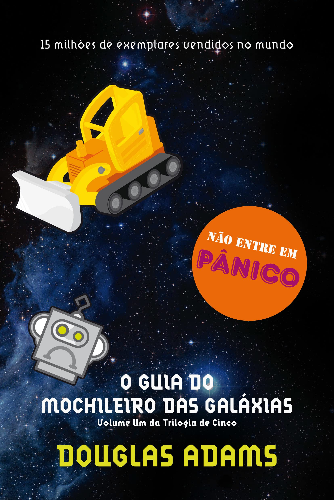

sua biblioteca à um clique de distãncia
Sumário
- harry potter e a pedra filosofal
- O senhor dois aneis: a sociedade dos aneis
- Percy Jackson e ladrao de raios
- Alice no país das maravilhas
- O Guia do mochileiro das galáxias
Harry Potter e a pedra filosofal

Sinopse
Harry Potter nunca tinha ouvido falar em Hogwarts até o momento em que as CARTAS começam a aparecer no capacho do número 4 da rua dos Alfeneiros.
Endereçadas com um LACRE PÚRPURA, elas são repidamente confiscadas por seus tios TERRÍVEIS. E então, no décimo primeiro aniversário de Harry,
um homem GIGANTESCO com olhos luzindo como besouros negros chamado RÚBEO HAGRID entra intempestivamente com uma notícia ASSOMBROSA:
Harry Potter é um bruxo e tem uma
vaga na ESCOLA DE MAGIA E BRUXARIA DE HOGWARTS.
Uma aventura inacreditável está para começar!
Fonte:Google Books
| data da primeira publicação |
Autor |
idioma Original |
Generos |
| 26 de junho de 1997 |
J. K. rowling |
Inglês |
romance, Literatura infantil, literatura fantastica, Alta fantasia |
O Senhor dos Anéis: A Sociedade do Anel
Sinopse
A Sociedade do Anel O volume inicial de O Senhor dos Anéis, lançado originalmente em julho de 1954, foi o primeiro grande épico de fantasia moderno, conquistando milhões de leitores e se tornando o padrão de referência para todas as outras obras do gênero até hoje. A imaginação prodigiosa de J.R.R. Tolkien e seu conhecimento profundo das antigas mitologias da Europa permitiram que ele criasse um universo tão complexo e convincente quanto o mundo real. A Sociedade do Anel começa no Condado, a região rural do oeste da Terra-média onde vivem os diminutos e pacatos hobbits. Bilbo Bolseiro, um dos raros aventureiros desse povo, cujas peripécias foram contadas em O Hobbit, resolve ir embora do Condado e deixa sua considerável herança nas mãos de seu jovem parente Frodo. O mais importante legado de Bilbo é o anel mágico que costumava usar para se tornar invisível. No entanto, o mago Gandalf, companheiro de aventuras do velho hobbit, revela a Frodo que o objeto é o Um Anel, a raiz do poder demoníaco de Sauron, o Senhor Sombrio, que deseja escravizar todos os povos da Terra-média. A única maneira de eliminar a ameaça de Sauron é destruir o Um Anel nas entranhas da própria montanha de fogo onde foi forjado. A revelação faz com que Frodo e seus companheiros hobbits Sam, Merry e Pippin deixem a segurança do Condado e iniciem uma perigosa jornada rumo ao leste. Ao lado de representantes dos outros Povos Livres que resistem ao Senhor Sombrio, eles formam a Sociedade do Anel. Alguém uma vez disse que o mundo dos leitores de língua inglesa se divide entre os que já leram O Senhor dos Anéis e os que um dia lerão o livro. Com esta nova tradução da obra, o fascínio dessa aventura atemporal ficará ainda mais evidente para os leitores brasileiros, tanto os que já conhecem a saga como os que estão prestes a descobrir seu encanto.
Fonte:Google Books
| data da primeira publicação |
Autor |
idioma Original |
Generos |
| 29 de julho de 1954 |
J.R.R. Tolkien |
Inglês |
Literatura fantástica, Obra de referência |
Percy Jackson e ladrao de raios

Sinopse
Marcados pelo destino, eles dificilmente passam da adolescência. Poucos conseguem descobrir sua identidade.O garoto-problema Percy Jackson é um deles. Tem experiências estranhas em que deuses e monstros mitológicos parecem saltar das páginas dos livros direto para a sua vida. Pior que isso: algumas dessas criaturas estão bastante irritadas. Um artefato precioso foi roubado do Monte Olimpo e Percy é o principal suspeito. Para restaurar a paz, ele e seus amigos – jovens heróis modernos – terão de fazer mais do que capturar o verdadeiro ladrão: precisam elucidar uma traição mais ameaçadora que fúria dos deuses.
Fonte:Amazon
| data da primeira publicação |
Autor |
idioma Original |
Generos |
| 28 de junho de 2005 |
Rick Riordan |
Inglês |
Fantasia, Aventura, Mitologia Grega |
Alice no país das maravilhas

Sinopse
Uma menina, um coelho e uma história capazes de fazer qualquer um de nós voltar a sonhar. Alice é despertada de um leve sono ao pé de uma árvore por um coelho peculiar. Uma criatura alva e falante com roupas engraçadas, que consulta seu relógio e reclama do próprio atraso. Curiosa como toda criança, Alice segue o animal até cair em um buraco sem fim que mudou para sempre a literatura infantil. Mais de 150 anos depois, Alice no País das Maravilhas continua repleto de ensinamentos para aqueles que ousaram seguir o Coelho Branco até sua toca.
Fonte:Amazon
| data da primeira publicação |
Autor |
idioma Original |
Generos |
| novembro de 1865 |
Lewis Carroll |
Inglês |
Literatura infantil, Literatura fantástica, Ficção Absurdista, Fantástico |
O Guia do mochileiro das galáxias

Sinopse
dupla escapa da destruição da Terra pegando carona numa nave alienígena, graças aos conhecimentos de Prefect, um E.T. que vivia disfarçado de ator desempregado enquanto fazia pesquisa de campo para a nova edição do Guia do Mochileiro das Galáxias, o melhor guia de viagens interplanetário.
Fonte:Amazon
| data da primeira publicação |
Autor |
idioma Original |
Generos |
| 12 de outubro de 1979 |
Douglas Adams |
Inglês |
Ficção científica, Romance, Humor, Ficção científica cômica, Ficção humorística |